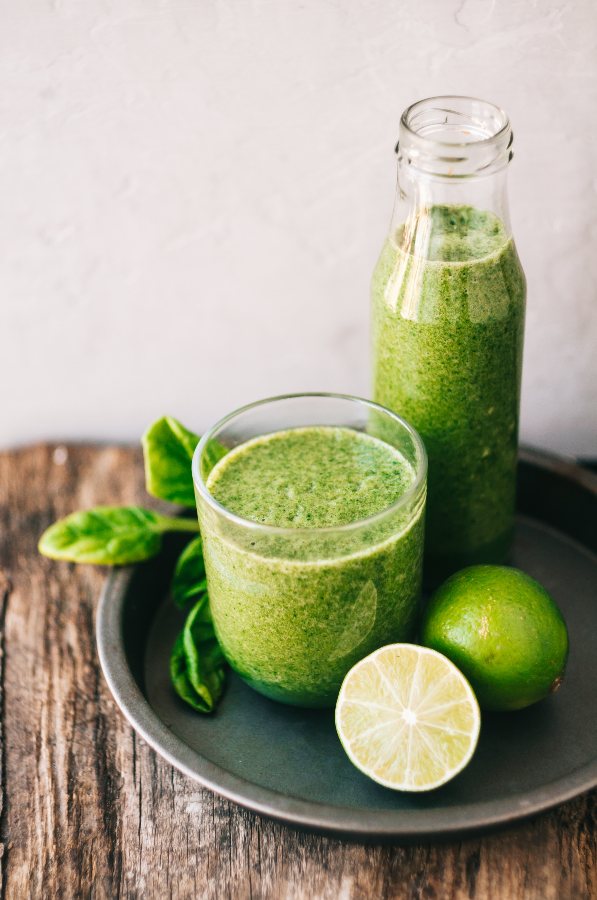

Skip The Diet,Just Eat Healthy With Foodie Website
I believe our healing journey with real food can be a stress-free life, filled with joy and flavor.
I believe our healing journey with real food can be a stress-free life, filled with joy and flavor.
About Me
Hi! i am Specialising in Chinese Cuisine, i am stresses on the importance of using fresh ingredients in
every dish and delighting guests with his gastronomic specialties. I made culinary debut with a Chinese
restaurant some 30 years ago and has since moved away from a traditional approach towards an innovative
style of cooking.
contact us
If life could only be as simple as following a recipe, we’d all be much happier. However, unlike food based recipes, life doesn’t provide you with standardized ingredients as each lives their unique life.

Looking for a drink to quench your thirst during the Navratris? Try out this Mint Juice recipe and we promise you won't be disappointed. Made using mint leaves, cumin powder, jaggery powder, sendha namak and water, this juice recipe is perfect to be enjoyed on a hot summer afternoon and will help you beat the scorching heat of the sun.

The lemon (Citrus limon) is a species of small evergreen tree in the flowering plant family Rutaceae, native to South Asia, primarily Northeast India. The tree's ellipsoidal yellow fruit is used for culinary and non-culinary purposes throughout the world, primarily for its juice, which has both culinary and cleaning uses.

Place chopped tomatoes, sliced cucumber, sliced red onion, diced avocado, and chopped cilantro into a large salad bowl. Drizzle with 2 Tbsp olive oil and 2 Tbsp lemon juice. Toss gently to combine. Just before serving, toss with 1 tsp sea salt and 1/8 tsp black pepper.